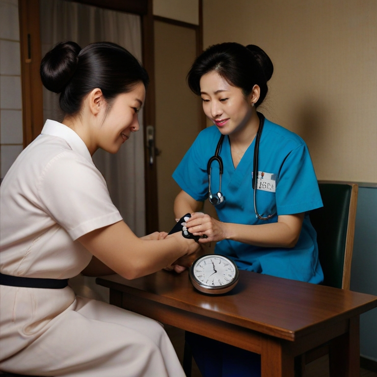

ナースのお仕事図鑑
各診療科の特徴や必要なスキルを図鑑にしました。
写真にカーソルを合わせると
詳細を読むことができます。
PC以外の場合は写真を長押ししてください。

No.1
内科
【特徴】薬物治療の介助や日常生活援助、セルフコントロール支援を行う。
【スキル】長期入院や、高齢で複数の疾患を持つ患者さんが多く、コミュニケーション能力や様々な疾患と症状の知識が必要。
No.2
外科
【特徴】手術前後の看護、治療や処置の介助を行う。
【スキル】急性期の患者さんが多く、病態が急速に変化するため迅速に複数の業務をこなす能力や幅広い専門的知識と看護技術が求められる。
No.3
救急診療科
【特徴】事故の怪我や急な病気などの緊急性の高い患者さんへの看護を提供する。
【スキル】対象患者は、全年齢、すべての疾患・外傷であり、幅広い知識と高度な看護技術が求められる。No.4
ICU
【特徴】診療の補助、本人・家族のケア、モニターや点滴管理を行う。患者2人に対し看護師1人で看護を行う。
【スキル】いつどんな患者が来るか予想できないため、粘り強く学び続けられるスキルが必要。No.5
手術室
【特徴】器械出し（医師に器具を渡す介助）と外回り（間接的に手術をサポート）を行う。
【スキル】疾患・術式だけでなく、執刀医ごとの特徴まで頭にいれ臨機応変に対応する能力が求められる。No.6
小児科
【特徴】診療の補助、子どもと家族のケアを行う。特殊な部署（NICUやGCU等）もある。
【スキル】子どもに関する幅広い疾患やケアの知識、家族ケアにおけるコミュニケーションスキルが必要。No.7
産科
【特徴】出産や生殖医療に関わる人たちをサポートする。唯一新しい命が誕生する科であり、非常にやりがいがある。
【スキル】症状などの基礎知識や、精神面に細やかに対応できるスキルが必要。助産師資格があると尚良い。No.8
精神科
【特徴】心理ケアや精神・身体症状の把握、日常生活援助、与薬を主に行う。
【スキル】心の病の治療のため、看護師の関わり方が非常に重要となる。観察力と高いコミュニケーションスキルが求められる。

No.9
在宅（訪問看護）
【特徴】利用者の自宅や施設に訪問し、症状に応じたケアを行う。
【スキル】基本的な知識や技術、異常を早期発見し素早く対処するスキルが必要。訪問時間が決まっておりタイムマネジメント能力が求められる。